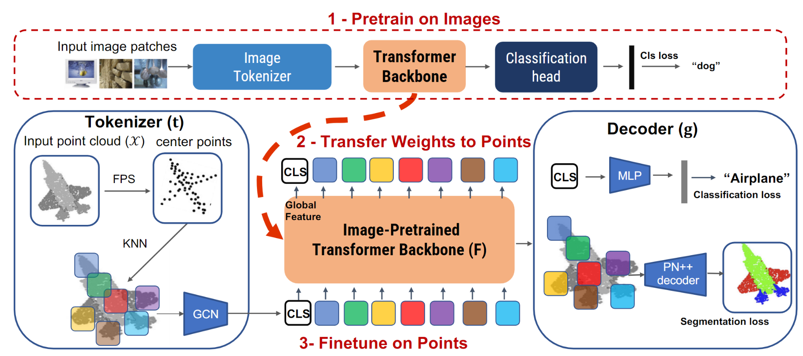

Pix4point
Pix4Point: Image Pretrained Transformers for 3D Point Cloud Understanding
by Guocheng Qian, Xingdi Zhang, Abdullah Hamdi, Bernard Ghanem

arXiv | code
News
 Sep, 2022: code released
Sep, 2022: code released
Abstract
Pure Transformer models have achieved impressive success in natural language processing and computer vision. However, one limitation with Transformers is their need for large training data. In the realm of 3D point clouds, the availability of large datasets is a challenge, which exacerbates the issue of training Transformers for 3D tasks. In this work, we empirically study and investigate the effect of utilizing knowledge from a large number of images for point cloud understanding. We formulate a pipeline dubbed Pix4Point that allows harnessing pretrained Transformers in the image domain to improve downstream point cloud tasks. This is achieved by a modality-agnostic pure Transformer backbone with the help of tokenizer and decoder layers specialized in the 3D domain. Using image-pretrained Transformers, we observe significant performance gains of Pix4Point on the tasks of 3D point cloud classification, part segmentation, and semantic segmentation on ScanObjectNN, ShapeNetPart, and S3DIS benchmarks, respectively.
Setup environment
- git clone this repository and install requirements:
git clone git@github.com:guochengqian/Pix4Point.git cd Pix4point bash install.sh
- download the ImageNet21k pretrained Transformer, and put it in
pretrained/imagenet/small_21k_224.pthgdown https://drive.google.com/file/d/1Iqc-nWVMmm4c8kYshNFcJsthnUy75Jl1/view?usp=sharing --fuzzy
ImageNet Pretraining
Please refer to DeiT's repo for details.
S3DIS
- finetune Image Pretrained Transformer
CUDA_VISIBLE_DEVICES=0 python examples/segmentation/main.py --cfg cfgs/s3dis_sphere_pix4point/pix4point.yaml
- test
CUDA_VISIBLE_DEVICES=0 python examples/segmentation/main.py --cfg cfgs/s3dis_sphere_pix4point/pix4point.yaml mode=test pretrained_path=<pretrained_path>
## ScanObjectNN
- finetune
CUDA_VISIBLE_DEVICES=0 python examples/classification/main.py --cfg cfgs/scanobjectnn_pix4point/pvit.yaml
ModelNet40
- finetune
CUDA_VISIBLE_DEVICES=0 python examples/classification/main.py --cfg cfgs/modelnet40ply2048/pix4point.yaml
ShapeNetPart
- finetune
CUDA_VISIBLE_DEVICES=0 python examples/shapenetpart/main.py --cfg cfgs/shapenetpart_pix4point/pix4point.yaml
Citation
If you are using our code in your work, please kindly cite the following:
@inproceedings{qian2022pix4point,
title={Pix4Point: Image Pretrained Transformers for 3D Point Cloud Understanding},
author={Guocheng Qian, Xingdi Zhang, Abdullah Hamdi, Bernard Ghanem},
publisher = {arXiv},
year={2022}
}